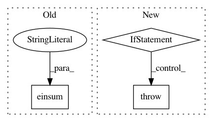

be14d17696f15d11a8075e4943c718320ca97a45,gpflow/conditionals/mo_sample_conditionals.py,,_sample_conditional,#Any#Any#Any#Any#,13
Before Change
g_mu, g_var = independent_cond(Xnew, feat, kern, f, white=white, q_sqrt=q_sqrt,
full_output_cov=False, full_cov=False) // [N, L], [N, L]
g_sample = sample_mvn(g_mu, g_var, "diag") // [N, L]
f_sample = tf.einsum("pl, nl -> np", kern.W(), g_sample)
return f_sample
After Change
logger.debug("(MixedKernelSharedMof, MixedKernelSeparateMof), SeparateMixedMok")
if full_cov:
raise NotImplementedError("full_cov not yet implemented")
if full_output_cov:
raise NotImplementedError("full_output_cov not yet implemented")
ind_conditional = conditional.dispatch(object, SeparateIndependentMof, SeparateIndependentMok, object)
g_mu, g_var = ind_conditional(Xnew, feat, kern, f,
white=white, q_sqrt=q_sqrt) // [..., N, L], [..., N, L]
g_sample = sample_mvn(g_mu, g_var, "diag", num_samples=num_samples) // [..., (S), N, L]
In pattern: SUPERPATTERN
Frequency: 3
Non-data size: 3
Instances
Project Name: GPflow/GPflow
Commit Name: be14d17696f15d11a8075e4943c718320ca97a45
Time: 2019-03-18
Author: art.art.v@gmail.com
File Name: gpflow/conditionals/mo_sample_conditionals.py
Class Name:
Method Name: _sample_conditional
Project Name: geomstats/geomstats
Commit Name: 30c9afa3e3a0fd64e2414432240b8a3e02bd6e03
Time: 2020-09-29
Author: nicolas.guigui@inria.fr
File Name: geomstats/geometry/hyperboloid.py
Class Name: Hyperboloid
Method Name: regularize
Project Name: scipy/scipy
Commit Name: cf1af9a18575f97ea31ed2d04e34cfd8b8af03f2
Time: 2018-06-30
Author: adibhar97@gmail.com
File Name: scipy/spatial/transform/rotation.py
Class Name: Rotation
Method Name: apply